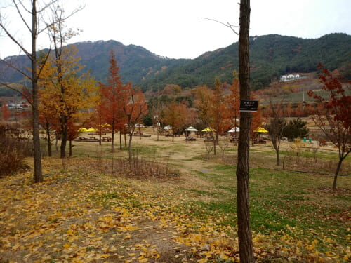
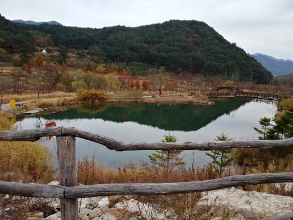
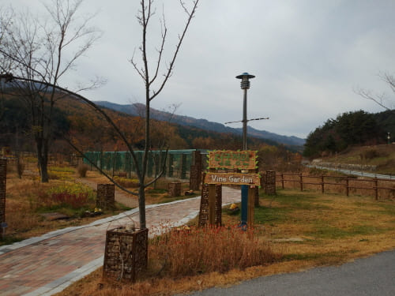
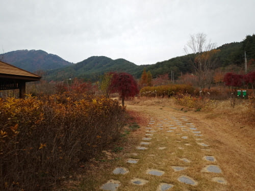
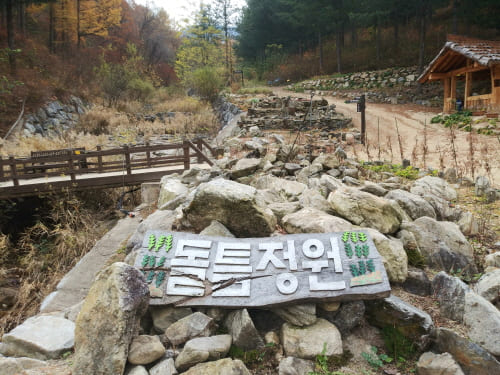
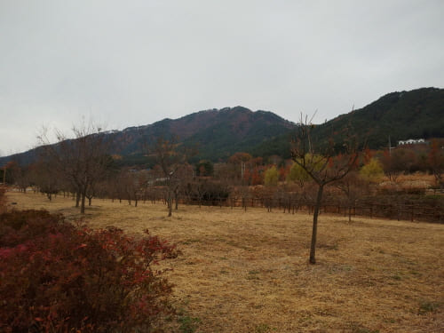
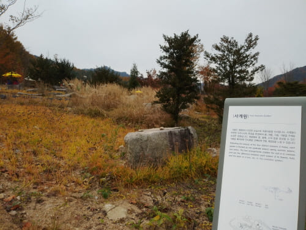
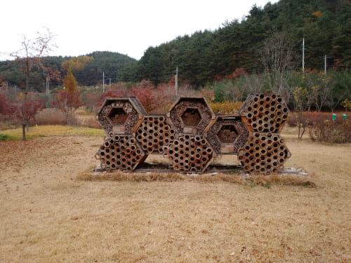

Gallery
역시 여행의 즐거움은 점심식사를 하며 오손도손 수다를 떨때인듯
백두대간 수목원 / 오후 일정

휴식장소
아름다운 곳에서 편한하게 점심식사를 하였다

거울연못
가을의 정취와 맑은 물이 어울어 졌다

덩굴정원
가을이라 무성한 덩굴은 볼수 없었다

꽃나무원
가을의 정취가 느껴진다

돌틈정원
돌무더기에도 정원으로 조성했다

매화원
봄이 올때 오면 좋을 듯

사계원
지금은 겨울초입의 모습이다

머리뿔가위벌
지금은 벌들의 모습이 보이지 않는다